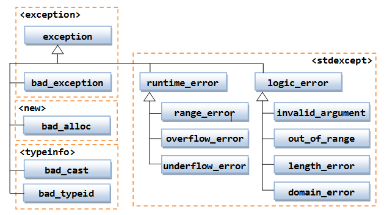

Exception Handling
C++ build the exception handling into the language via keyword throw, try and catch and headers <exception>, <stdexcept>.
In building your classes, you often need to validate the inputs in member functions such as constructors and setters. In the case of invalid inputs, instead of abnormally terminate the program (via abort() or exit()); or setting them to some default values, it is better to throw an exception to the caller and let the caller decides what to do with the exception.
throw, try and catch
Suppose that we have a class called PositiveInteger, which maintains a data member value containing a positive integer.
PositiveInteger.h
1 2 3 4 5 6 7 8 9 10 11 12 13 14 15 |
/* Header for the PositiveInteger class (PositiveInteger.h) */ #ifndef POSITIVE_INTEGER_H #define POSITIVE_INTEGER_H class PositiveInteger { private: int value; // positive integer (>0) only public: PositiveInteger(int value = 1); void setValue(int value); int getValue() const; }; #endif |
PositiveInteger.cpp
1 2 3 4 5 6 7 8 9 10 11 12 13 14 15 16 17 18 19 20 21 22 23 24 25 26 |
/* Implementation for the PositiveInteger Class (PositiveInteger.cpp) */ #include <iostream> #include <stdexcept> // Needed for exception handling #include "PositiveInteger.h" using namespace std; // Constructor with input validation PositiveInteger::PositiveInteger(int value) { // Call setter to perform input validation setValue(value); } // Setter with input validation void PositiveInteger::setValue(int v) { if (v > 0) { value = v; } else { throw invalid_argument("value shall be more than 0."); // need <stdexcept> } } // Getter int PositiveInteger::getValue() const { return value; } |
Program Notes:
- The constructor calls the setter
setValue(), which validates the input value. - In
setValue(), if the input is invalid, instead of print an error message or terminate the program (viaabort()orexit()), wethrowaninvalid_argumentexception with an appropriate message. Theinvalid_argumentis one of the system-defined exception classes in header<stdexcept>.
TestPositiveInteger.cpp
1 2 3 4 5 6 7 8 9 10 11 12 13 14 15 16 17 18 19 20 21 22 23 24 25 26 27 28 29 30 31 32 33 34 35 36 37 38 39 40 41 42 |
/* Test Driver for the PositiveInteger class (TestPositiveInteger.cpp) */ #include <iostream> #include <stdexcept> // Needed for exception handling #include "PositiveInteger.h" using namespace std; int main() { // Valid input PositiveInteger i1(8); cout << i1.getValue() << endl; // Invalid input without try-catch // PositiveInteger i2(-8); // Program terminate abruptly // Graceful handling of exception with try-catch try { cout << "begin try 1..." << endl; PositiveInteger i3(-8); // Exception thrown. // Skip the remaining statements in try and jump to catch. cout << i3.getValue() << endl; cout << "end try 1..." << endl; // Continue to the next statement after try-catch, if there is no exception } catch (invalid_argument & ex) { // need <stdexcept> cout << "Exception: " << ex.what() << endl; // Continue to the next statement after try-catch } cout << "after try-catch 1..." << endl; // Graceful handling of exception with try-catch try { cout << "begin try 2..." << endl; PositiveInteger i4(8); // no exception thrown cout << i4.getValue() << endl; cout << "end try 2..." << endl; // Continue to the next statement after try-catch, if there is no exception } catch (invalid_argument & ex) { // need <stdexcept> cout << "Exception: " << ex.what() << endl; // Continue to the next statement after try-catch } cout << "after try-catch 2..." << endl; } |
Program Notes:
- Without the
try-catchstatement, the program abnormally terminated, when athrowstatement is encountered. - With
try-catch, the execution skips the rest of thetry-clause, when athrowstatement is encountered. It jumps into thecatch-clause; and continues to the next statement after thetry-catch. Take note that the program is not abnormally terminated. - If no exception is encountered, the execution completes the
tryclause, skip thecatch-clause, and continues to the next statement after thetry-catch. - The
catchtakes a parameter of a reference toexceptionclass (in header<exception>) or its subclass (such asinvalid_argumentin header<stdexcept>). - The
exceptionclass has a member functionwhat(), which prints the exception message. - You can have multiple
catch-clauses, each catching a exception type. If an exception is thrown, the catch-clauses are matched in sequential manner. Thecatchclause catches an exception also catches its subclass. - If an exception is thrown, but no catch-clause matches the exception type. The program returns to its caller (unwinding the function stack), and repeat the exception handling process in the caller.
Example: The Time Class
HERE.
Class exception and its subclasses
The root class is called exception (in header <exception>). It contains a member function what() which returns the what-message:
virtual const char* what() const throw();
// what() is a virtual function, can be overridden by subclasses
// It returns a C-string.
Some commonly-used subclasses are pre-defined in header <stdexcept>:
logic_error: indicating programming logic errors, such asinvalid_argument(invalid argument passed into function),out_of_range(value, such as indexing subscript, out of range),length_error(length larger than the maximum allowable length), etc.class logic_error : public exception { public: explicit logic_error (const string & what_message); };runtime_error: indicating execution-time error, such asrange_error(range error in internal computation),overflow_error(result larger than the largest possible number),under_flow_error(result smaller than the smallest possible number).bad_exception: unexpected exception.
Creating Your Own exception subclass
You can create your own exception by subclassing exception or its subclasses (such as logic_error or runtime_error). For example,
MyException.h
1 2 3 4 5 6 7 8 9 10 11 12 13 |
/* Header for the MyException class (MyException.h) */ #ifndef MY_EXCEPTION_H #define MY_EXCEPTION_H #include <stdexcept> class MyException : public std::logic_error { public: // Constructor MyException() : std::logic_error("my custom error") { }; }; #endif |
Program Notes:
- Your custom exception shall subclass
exceptionor its subclass, in this case,logic_error. - Provide a constructor with a custom what-message.
TestMyException.cpp
1 2 3 4 5 6 7 8 9 10 11 12 13 14 15 16 |
/* Test Driver for the MyException class (TestMyException.cpp) */ #include <iostream> #include "MyException.h" using namespace std; void fun() { throw MyException(); } int main() { try { fun(); } catch (MyException & ex) { cout << ex.what() << endl; } } |
Storage Duration, Scopes and Linkages
Recall that a variable has a name, a type and stores a value of the particular type. It also have other attributes such as storage duration, scope and linkage, which is either set implicitly, or via so-called storage class specifiers such as auto (automatic storage allocation/deallocation. C++11 reassigns this keyword to mean automatic derived type), register, static, extern, mutable and thread_local (added in C++11); or CV-qualifiers: const and volatile (CV stands for constant-volatile).
Storage Duration - Automatic, Static and Dynamic
The storage duration (or storage class) determines the duration of a variable, i.e., when it is created and when it is destroyed. They are 3 types of storage durations:
- Automatic storage duration: Variables declared inside a function (including function parameters) or block have automatic storage duration. They are created when the program enters the function (or the block) in which they are defined, and destroyed (memory is deallocated and freed) when the program leaves the function (or the block). They are called automatic as they are managed (created/destroyed) automatically without programmer's explicit actions. They will be created/destroyed repeatably as the program enters and leaves the function (or block).
- Static storage duration: Variables declared outside all functions, or inside a function with
staticspecifier have static storage duration. The termstaticmeans that (a) the variable is created when the program begins and destroyed when the program exits, i.e., it exists for the entire duration of the program; (b) the variable retains its memory and contents throughout the entire execution. - Dynamic storage duration: Dynamic storage are managed by programmer explicitly (instead of automatically). Storage (on the heap) is allocated via
newoperator and persists until they are freed via thedeleteoperator.
Compiler typically allocates 3 chunks of storage for static variables, automatic variables, and dynamically allocated variables, respectively.
Scope - Local or Global
The scope of a variable determines which parts of the program can reference the variable, i.e., the visibility. Some variables can be referenced throughout the program (file-scope or global-scope); while others can only be referenced in a limited part of the program (block-scope or local-scope). For example, a local automatic variable defined inside a function (or a block) is visible by that function (or block), and not outside the function (or block).
There are two scopes:
- A variable having local scope (or block scope) is visible only inside the block.
- A variable having global scope (or file scope) is visible throughout the file.
Linkage - Internal or External
A C/C++ application may consist of many source files (or translational units). The linkage of a variable determines how a variable is shared by different files. A variable with external linkage can be shared by other source files; while a variable with internal linkage can only be used in the file that it is defined. That is, external linkage extends the file-scope to other source files.
In summary, with linkage, there are 3 combinations of scopes/linkages:
- block-scope (or local-scope) with no linkage,
- file-scope (or global scope) with internal linkage,
- file-scope (or global scope) with external linkage.
Take note that a variable might exist in memory (determined by its storage duration) but not visible by a certain part of the program (determined by its scope and linkage). For examples, a local variable created within a function still exists when the function calls another function, but it is not visible by the second function. A static variable declared inside a function exists throughout the program duration, but visible only by that function. A static variable with internal linkage exists throughout the program duration, but visible only to the file in which it is defined.
Automatic Local Variables ("auto" Specifier)
Variables defined inside a function (block) and function parameters are "auto", by default. They have automatic storage duration, i.e., they are created when the program enters the function (block) and destroyed when the program leaves the function (block). They have local scope (i.e., can be used within the function or block immediately after they are declared) and no linkage (i.e., either internal or external linkage).
Automatic storage is used to converse memory, as these variables does not exist throughout the entire program, but created when needed (and destroyed).
You can use the auto specifier to explicitly specify automatic storage class for a variable. However, it is rarely used as auto is the default for local variables. In C++11, the keyword "auto" is assigned a new meaning to indicates automatic type deduction. The old meaning of automatic storage class is no longer valid in C++11.
For example,
1 2 3 4 5 6 7 8 9 10 11 12 13 14 15 16 17 18 19 20 |
/* Test Local Variable Duration and Scope (LocalVariableScope.cpp) */ #include <iostream> using namespace std; int main() { // localVar allocated when execution enters the block cout << "Hello" << endl; int localVar; // localVar's scope begins after declaration localVar = 8; { // blockVar allocated localVar = 88; int blockVar; // blockVar's scope begins blockVar = 99; cout << blockVar << endl; } // blockVar's scope ends and deallocated // when execution leaves the block cout << localVar << endl; } // lcoalVar's scope ends and deallocated |
Take that that C++ allocates local variable when the execution enters the block, but the local variable is only visible (i.e., scope begins) after its declaration statement. The variable's scope ends and is deallocated when the execution leaves the block. You can verify that local variables are allocated when execution enters the block using a graphic debugger (on CodeBlock or Eclipse) - Try it out!
Automatic variables are not initialized. You MUST assign an initial value. Compiler may not issue a warning/error if you use uninitialized local variable.
Automatic variables are typically allocated in a function stack (a Last-in-First-out LIFO queue), where the new data is stacked on top of the existing data. When a function is called, the caller pushes the arguments onto the stack. The function's local variables are also pushed (allocated) onto the stack. When the function exits, the top-of-stack pointer is reset and all variables are freed.
If the inner block has a variable with the same name of the outer block (e.g., rename blockVar to localVar in the above example), we say that the inner block's variable hides the outer block's variable. The outer block's variable is temporarily out of scope, until the inner block exits.
Register Automatic Variables ("register" Specifier)
You can use the "register" specifier to suggest to the compiler to put an automatic variable in a register for faster access. This is often unnecessary, as an optimizing compiler can do this automatically.
Static Variables ("static" Specifier)
As mentioned, a static variable:
- is allocated when the execution begins and lasts for the entire duration of the program;
- retains its memory and contents throughout the program execution. An static variable declared inside a function retains its value even when the function exits.
Static variables are initialized to zero (all its bits set to 0), if no initial values are provided. All elements of static array and structures are initialized to zero too. On the other hand, automatic local variables are not initialized.
Static variables are allocated at fixed memory locations (instead of function stack) as they last for the entire program duration.
Static variables has three types of linkage:
- external: global static variables visible in other source files - defined outside all functions.
- internal: global static file-scope variables visible in the file that it is defined - defined outside all functions with keyword
static. - no linkage: local static variable visible within a function or block for which it is defined - defined inside a function with keyword
static.
For example,
1 2 3 4 5 6 7 8 9 10 11 12 13 14 15 16 17 18 19 20 21 22 23 24 25 26 27 28 29 30 31 |
/* Test static variables of various linkage (TestStatic.cpp) */ #include <iostream> using namespace std; // All static variables are allocated when the program starts and // last for the entire program duration // Uninitialized static variables are initialized to zero (all bits set to zero) int allFileVar; // static variable, external linkage // accessible (scope) by other files with "extern" specifier static int thisFileVar; // static variable, internal linkage // accessible (scope) by all functions in this file void fun(); int main() { cout << allFileVar << endl; // 0 fun(); fun(); fun(); cout << thisFileVar << endl; // 0 } void fun() { cout << thisFileVar << endl; // 0 { static int blockVar; // static variable, no linkage // scope is this block // It retains its value across function calls ++blockVar; cout << "blockVar is " << blockVar << endl; // 1, 2, 3 } } |
Try using a graphic debugger (CodeBlocks or Eclipse) to check the duration (created/destroyed) and scope (visible) of the variables.
The static variable blockVar, which is declared inside the function fun(), has local scope and no linkage. It can only visible (scope) inside the block in which it is defined, just like an automatic variable. But unlike automatic variable, static variable retains its memory (and value) across multiple function calls. Both the static variables allFileVar and thisFileVar are visible (scope) immediately after their declarations. thisFileVar, with "static" specifier, has internal linkage and can be used by all functions in this file. On the other hand, allFileVar, without the "static" specifier, has external linkage and can be used in other files with "extern" specifier (which will be described later).
static class members
A static class member (data or function) belongs to the class, instead of instances. It can be referenced directly from the class, without creating instances, via Classname::staticMemberName. A static data member retains its value throughout the program execution.
External Variables ("extern" Specifier)
The extern specifies linkage to another source file. It tells the compiler that the identifier is defined in another (external) source file.
// File1.cpp extern int globalVar; // Declare that this variable is defined in another file (external variable). // Cannot assign an value. // Need to link to the other file.
// File2.cpp int globalVar = 88; // Definition here // or extern int globalVar = 88; // The "extern" specifier is optional. // The initialization indicates definition
C/C++ has the so-called "one definition rule", which states that a variable can only be defined once. In the above example, the statement "int globalVar" in File2.cpp is called the defining declaration (or simply definition), which causes memory to be allocated; the statement "extern int globalVar" in File1.cpp is called referencing declaration (or simply declaration), which does not allocate memory but links to an existing memory.
Summary
Recap that the duration determines when the variable is created and destroyed; scope determines which part of the program can access the variable; and linkage determines whether the variable is available in other source files.
| Description | Duration | Scope | Linkage | |
|---|---|---|---|---|
| Variables declared inside a function (or block) | Automatic local variables | Block | Block (or Local) | None |
Variables declared inside a function (or block) with static specifier |
Static variables with no linkage | Static (Entire program) | Block (or Local) | None |
| Variables declared outside all functions | Static variables with external linkage | Static (Entire program) | File (or Global) | External |
Variables declared outside all functions with static specifier |
Static variables with internal linkage | Static (Entire program) | File (or Global) | Internal |
CV-Qualifiers (const and volatile) and mutable
The "const" qualifier indicates that the content of the storage location shall not be changed after initialized.
The "volatile" qualifier indicates that the content of the storage location could be altered outside your program, e.g., by an external hardware. This qualifier is needed to tell compiler not to optimize this particular location (e.g., not to store in register, not to re-order the statement, or collapse multiple statements).
The mutable specifier can be used in struct or class to indicate that a particular data member is modifiable even though the instance is declared const.
"const" Global Variables
By default, a global variable (defined outside all functions) has external linkage. However, const global variable has internal linkage (as if static specifier is used). As the result, you can place all const global variables in a header file, and include the header in all the source files. To set a const global variable to external linkage, include "extern" specifier.
Function and Linkage
So far, we were discussing about variables. By default, functions have duration of the entire program, and external linkage (can be shared across file).
You use use the "static" specifier to confine the function to internal linkage (accessible in this file only). The "one definition only" rule applies to all non-inline functions. That is, there is only one function definition. Each file shall have the function prototype (declaration). Since inline functions are often placed in the header, which will be included in all file, the "one definition rule" makes an exception. However, all copies of inline function shall be identical.
If a function is declared static in its prototype, the C++ compiler/linker search the current file only for the function definition. Otherwise, C++ compiler/linker searches all the program files. It issues an error if it finds more than one definitions. If the function is not found in all the program files, it then searches the libraries.
extern "C" vs. extern "C++"
Many C++ compilers use a so-called "name mangling scheme" to support function overloading (i.e., many versions for the same function name differentiated by their parameter list). You can use keyword extern to indicate the naming protocol of the function, for example,
extern "C" void function1 (int, int); // Use C function naming protocol // without name manglind extern "C++" void function2 (double, double); // Use C++ naming mangling extern void function (double, double); // Same as above
Other Scopes
Besides the block-scope (local-scope), file-scope (global-scope) with internal or external linkage, there are:
- Function Scope: A label (identified by an identifier followed by a colon, e.g.,
loop:) can be referenced within the entire function in which it is defined. - Function Prototype Scope: The optional identifiers defined in the function prototype is confined to the function prototype only. There are not bind to the function definition.
- Class Scope: Class members (data and function) have class scope and are visible inside the class definition. You can use the same identifier in two different classes. You cannot access a class member directly outside the class definition, even for public members (which is accessed via the dot operator in the form of
objectName.memberName). - Namespace Scope: Name defined under a namespace are visible within the namespace definition only. You need to use the scope resolution operator to reference the name outside the namespace definition in the form of
namespace::memberName. With the introduction of namespace in C++, the global scope is changed to global namespace scope, identified by a nameless namespace or::memberName.
Summary of static Keyword
- A
staticvariable defined inside a block has block-scope, but having duration for the entire program. It retains its memory and value across multiple invocations. - A
staticglobal variable defined outside all functions has file-scope with internal linkage (i.e., visible only to the file in which it is defined, but not other source files). It has duration for the entire program, and retains its memory and value throughout the program execution. On the other hand, a global variable without the static keyword has file-scope with external linkage. It can be referenced by other file via theexternkeyword. - A
staticclass member belongs to the class, instead of the instances. There is one copy shared by all the instances. It has class scope. To reference it outside the class, use the scope resolution operatorclassname::static_membername.
Type Casting Operators
C++ supports C's explicit type casting operations (new-type)value (C-style cast), or new-type(value) (Function-style cast), called regular cast. Regular cast is too lax, and often produces expected result.
C++ introduces 4 new type casting operators: const_cast<new-type>(value), static_cast<new-type>(value), dynamic_cast<new-type>(value), reinterpret_cast<new-type>(value) to regulate type casting. Although the old styles is still acceptable in C++, new styles are preferable.
static_cast
static_cast is used for force implicit conversion. It throws a type-cast error if the conversion fails.
You can use static_cast to convert values of various fundamental types, e.g., from double to int, from float to long.
[TODO] Example
dynamic_cast
dynamic_cast can be used to verify the type of an object at runtime, before performing the type conversion. It is primarily used to perform "safe downcasting"
The syntax is:
dynamic_cast<Type *>(ptr)
It converts the pointer ptr to a pointer of the type Type, in runtime, if ptr is pointing to an object of Type, or its direct or indirect subclass. Otherwise, it returns 0, or null pointer.
You can use dynamic_cast in a condition to ascertain the type of the object, before performing certain operations.
[TODO] Example
const_cast
The const_cast can be used to drop the const label, so as to alter its contents (i.e., cast away the const-ness or volatile-ness). This is useful if you have a variable which is constant most of the time, but need to be changed in some circumstances. You can declare the variable as const, and use const_cast to alter its value. The syntax is:
const_cast<Type>(expression)
const_cast cannot change the type of an object.
[TODO] Example
reinterpret_cast
Used for low-level casts that yield implementation-dependent result, e.g., casting a pointer to an int.
Summary of const Keyword
A const variable (local or global) cannot be modified, and must be initialized during declaration. By convention, these const variable are named in uppercase.
const int SIZE = 5; int main() { const int ROWS = 8; ...... }
Function's Parameters
In C++, objects are pass-by-value into function by default, which has no side effect but involves calling the copy constructor to make a clone copy (an expensive operation for huge objects). Objects should be passed into function by reference as far as possible for performance. However, in pass-by-reference, changes made inside the function have side effect of modifying the caller's object. We could use keyword const to enforce immutability, if we do not wish to change the object inside the function. Instead of using pass-by-value to prevent side-effect, it is better to use pass-by-reference-to-const.
void fun (MyClass obj); // pass-by-value (default) // Invoke copy constructor to make a clone copy // No side-effect void fun (MyClass & obj); // pass-by-reference, have side-effect void fun (const MyClass & obj) // pass-by-reference-to-const // No side-effect. Cannot modify caller's copy
You can also use const for array to prevent it from being modified inside the function (as array is an pointer).
It is recommended to leave out the const for fundamental types (int, double), as they are passed by value. Although you can use const keyword to prevent modification of these local parameters (which is rarely necessary), the keyword can be confusing. If needed, you may include it in the implementation, but leave them out from the header.
const function parameters = not modifying the caller's copy (in pass-by-reference).
Function's Return Value
For object return type, we can use const to prevent it to be used as the lvalue, e.g., f() = x. A const return object cannot be a lvalue (e.g., for assignment); while a non-const return object can.
For example, if we overload the + operator for the MyComplex class:
MyComplex operator+ (const MyComplex & lhs, const MyComplex & rhs);
// non-const return type can be used as lvalue
MyComplex c1, c2, c3;
c1 + c2 = c3; // Valid if the return type is non-const
// Not meaningful and possibly a misspelling of
// c1 + c2 == c3
Function return value of fundamental types can never be the lvalue, and trigger compilation error.
Class
A const data member cannot be modified (as usual).
A const member function (with const keyword at the end of the function) cannot modify data members.
Object
A const object can only invoke const member function. It cannot invoke non-const member function. A non-const object can invoke both const and non-const member function.
If a function is overloaded with a const and a non-const version, a const object will match with a const member function. A non-const object will match with a non-const function. For example, the at() function of string class has two versions:
char & at (size_t pos); // non-const member function const char & at (size_t pos) const; // const member function
A const string object will invoke the const version, which returns a const char & that cannot be used a lvalue.
const string str1("hello"); // const string object
cout << str1.at(1); // okay
str1.at(1) = 'x'; // error - returned const char & cannot be lvalue
string str2("again"); // non-const string object
str2.at(1) = 'x'; // okay
Pointer
- Non-constant pointer to constant data: Data pointed to CANNOT be changed; but pointer CAN be changed to point to another data. For example,
int i1 = 8, i2 = 9; const int * iptr = &i1; // non-constant pointer pointing to constant data // *iptr = 9; // error: assignment of read-only location iptr = &i2; // okay
- Constant pointer to non-constant data: Data pointed to CAN be changed; but pointer CANNOT be changed to point to another data. For example,
int i1 = 8, i2 = 9; int * const iptr = &i1; // constant pointer pointing to non-constant data *iptr = 9; // okay // iptr = &i2; // error: assignment of read-only variable
- Constant pointer to constant data: Data pointed to CANNOT be changed; and pointer CANNOT be changed to point to another data. For example,
int i1 = 8, i2 = 9; const int * const iptr = &i1; // constant pointer pointing to constant data // *iptr = 9; // error: assignment of read-only variable // iptr = &i2; // error: assignment of read-only variable
- Non-constant pointer to non-constant data: Data pointed to CAN be changed; and pointer CAN be changed to point to another data. For example,
int i1 = 8, i2 = 9; int * iptr = &i1; // non-constant pointer pointing to non-constant data *iptr = 9; // okay iptr = &i2; // okay
If the keyword const appears before (to the left) of the *, what is pointed-to is a constant. If it appears after (to the right) of *, the pointer itself is a constant.
C++ Keywords
Keywords Ported from C Language (32)
- Types:
int,short,long,char,float,double,void,signed,unsigned,typedef. - Flow Control:
if,else,switch,case,default,while,do,for,break,continue,goto,return. - Storage Qualifiers:
const,volatile,auto,extern,register,static. - Operators:
sizeof. - Compound Types:
enum,struct,union.
C++98/03 Keywords (42)
- Class:
class,public,private,protected,friend,explicit(constructor),inline(function),virtual(polymorphism),operator(overloading). - Template:
template,export,typename. - Namespace:
this,namespace,using. - Types:
bool,true,false,wchar_t. - Memory Allocation:
new,delete, - Exception Handling:
try,catch,throw. - Operators:
and(&&),or(||),not(!),xor(^),compl(~),bitand(&),bitor(|),and_eq(&=),or_eq(|=),not_eq(!=),xor_eq(^=). - Type and Casting Operators:
typeid,static_cast,const_cast,dynamic_cast,reinterpret_cast. - Storage Qualifier:
mutable. - Others:
asm(inline assembly block).
C++11 Keywords (10)
- Types:
char16_t,char_32_t,nullptr. - Storage Qualifiers:
thread_local. - Others:
alignas,alignof,constexpr,decltype,noexcept,static_asert.